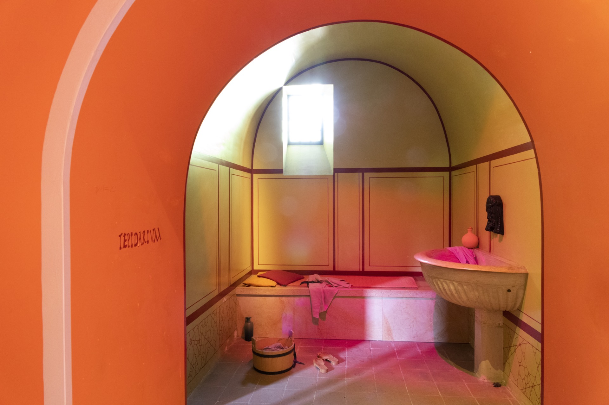

Mit Bild

«Wer durch Augusta Raurica geht, läuft über zweitausend Jahre Alltag. Jede Grabung erzählt uns, wie nah uns die Menschen damals waren.»
Ohne Bild
«Das Theater war für die Römer mehr als Unterhaltung: Hier traf sich die ganze Stadt, und genau das spürt man noch heute an einem Sommerabend.»
Das Zitat baut sich Zeile für Zeile auf: jede Zeile steigt aus ihrer eigenen Unterkante, wie gesetzt. Das Bild lädt wie bei Single Image: der Rahmen öffnet sich von innen, das Foto blendet ein und bewegt sich danach leicht langsamer als die Seite. Die Quellenangabe folgt zum Schluss. Die Zeilen werden bei jeder Breite neu berechnet (SplitText autoSplit).
| Was | Auslöser | Dauer · Easing |
|---|---|---|
Bild: Rahmen öffnet sich (clip-path 6 % → 0 %), wie Single Image | Scroll, Bild bei 85 % Viewport | 1.1 s · AR.ease.out |
| Bild blendet ein, 104 % → 100 % | Bild geladen (AR.lazy) | 0.9 s · AR.ease.out |
| Bild-Parallax im Rahmen (−5 % → +5 %) | Scroll, an Scroll gekoppelt | scrub: true, linear |
| Zitat-Zeilen steigen aus der Zeilenmaske (yPercent 100 → 0) | gleichzeitig, 80 ms pro Zeile | 0.9 s · AR.ease.out |
| Quelle blendet von unten ein (12 px) | nach der letzten Zeile −0.4 s | 0.6 s · AR.ease.out |
| Reduzierte Bewegung | Kein Zeilen-Split, Zitat und Quelle blenden nur nacheinander ein. Bild blendet nur ein (0.4 s), keine Parallax. | |